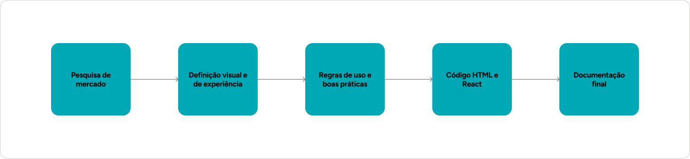
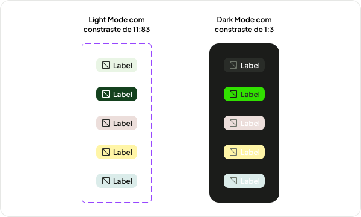
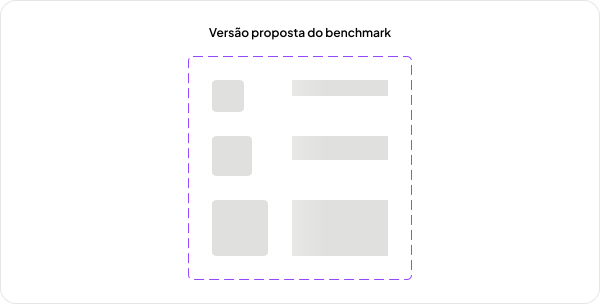
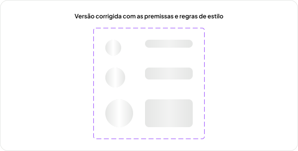

Criando um fluxo de agentes com IA para construir um design system inteiro, sem abrir mão da qualidade
Na Nio, havia uma restrição estrutural de time em que eu era a única pessoa responsável pelo NioDS, um design system multiplataforma Web e App (Android e iOS), com premissas de acessibilidade, responsividade e multiproduto. Manter tudo isso no ritmo que os times precisavam era inviável para uma pessoa sozinha com muitos processos manuais.
- Times de produto5
- PlataformasWeb · Android · iOS
- PremissaMultiproduto

O processo de criação levava de 1 a 2 dias
Cada componente passava por todo o processo de forma manual: pesquisa de referências, definição de regras de uso e especificações, validação de acessibilidade, código em HTML e React para testar, documentação inicial, até a revisão de todos os artefatos para garantir consistência. Tudo isso levava de 1 a 2 dias conforme a complexidade do componente.

Transformei o processo em um fluxo de agentes com IA
Cada etapa virou um agente especializado que executa a tarefa manual. Entre uma etapa e a próxima existe uma validação. Nada avança sem a revisão e aprovação. A automação assumiu a execução do processo operacional. A arquitetura e a revisão de design continuam sendo feitas por uma pessoa.
Os agentes executam
- Pesquisa de benchmark em design systems de referência
- Rascunho de UX, especificação visual e tokens
- Checagem de contraste e requisitos de acessibilidade
- Código em HTML/CSS e React
- Terminologia, textos e documentação
Eu decido
- A arquitetura de tokens e o contrato dos componentes
- O que atende às premissas do sistema e o que não atende
- O que é aprovado e o que volta para refação
- As soluções que a máquina não encontra sozinha
- Como uma correção pontual vira decisão de sistema
Evoluindo de forma consistente, sem remendos
O agente de acessibilidade encontrou problemas com o componente Tag. Texto e ícone não atingiam o contraste mínimo AAA. A correção não foi trocar por uma cor qualquer que passasse. Foi criar dois tokens novos, always-dark e always-light, que resolveram a Tag e passaram a servir outros componentes. O agente expôs o problema. A decisão de arquitetura de tokens foi minha.

Seguia as referências, mas fugia das premissas.
A primeira proposta do Skeleton seguia o benchmark, mas trazia animações e estilos fora dos padrões que já haviam sido definidos para o sistema. Reprovei e mandei os agentes rodarem novamente, mas agora com uma nova direção. Os agentes seguem os critérios de design definidos no projeto, não apenas a referência externa. É isso que separa uma linha de produção de uma automação cega.


Acessibilidade sem complexidade técnica
O guia de estilos do NioDS é focado em HTML e CSS, sem depender de JavaScript. O Accordion é onde isso mais pesa. A primeira solução usava o checkbox hack, mas ele trazia problemas de semântica e acessibilidade. A decisão final foi usar details e summary nativos, acessíveis por padrão, operáveis por teclado e sem JavaScript. Os agentes ajudaram a chegar nessa solução testando as alternativas contra as premissas de acessibilidade.


Materiais prontos para uso


9
Etapas orquestradas, cada uma com um agente especializado e uma etapa de validação
Premissas
Acessibilidade, responsibidade, consistência de código, tudo seguia um padrâo.
< 2h
De 1 a 2 dias de trabalho manual para menos de 2 horas de ponta a ponta